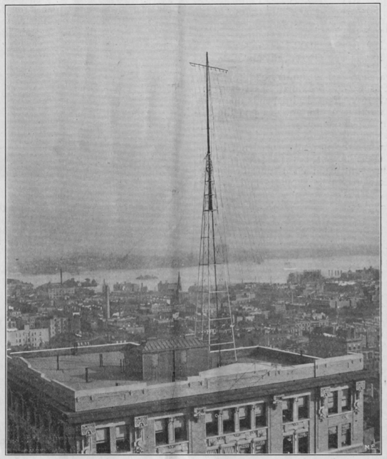

\[The Born and the Mechanical Inventor\]
*Modern Electrics*, vol. 3 no. 11 , February 1911
DRAFT: Please do not share without permission of the author. Typeset versions in web | pdf | doc
WE have spoken several times of inventions and the present editorial is one on cultivating inventions.
Generally speaking, there are two kinds of inventing. One is achieved by the man who can’t help inventing new things; he is a born inventor, just like a musician to whom music comes naturally and who never needed a teacher. The second kind of inventing is the mechanical kind. By this is meant the kind of inventing that is done by persons to whom inventing does not come natural, but those who are suddenly confronted with a certain device that to their minds seems imperfect, whereupon they will bend their energies towards improving the existing device.
The born inventor differs from the mechanical one in that to him ideas come suddenly, without the slightest suggestion. The writer, for instance, who has invented a number of devices will suddenly have a certain idea, of which he perhaps never thought before. Within less than ten seconds after the first impression of the idea, he will see the entire device, down to the smallest detail clearly before his mental eye and from that mental picture a complicated sketch of the device can be drawn immediately without reflection or real thinking; just like copying an existing drawing.1
Considered all in all, the two kinds of inventors, as far as their inventions go are nearly equally matched. The born inventor will usually invent a great many things, three fourths of which are useless: he becomes guilty of over-production. The mechanical inventor invents very few things as a rule and most of them are usually useful. Thus nature tries to maintain the universal equilibrium.2
A few words of advice to the two kinds of inventors does not seem out of place.
The fundamental test of any invention should always be whether it is better or cheaper than existing devices and whether it will be profitable to market the invention.
Most inventors, on account of being far too enthusiastic and optimistic, fool themselves by not considering in cold blood all the defects of their devices. There was never an invention that had not its bad points and weak spots. These should be considered most critically by the inventor, because if he does not do it, the world will soon enough do it with surprising thoroughness, usually to the dismay of the misguided inventor.
Never market an invention before it is completely worked out and “fool-proof.” If it has weak spots, try and improve on same, if you don’t do it, your competitors will do it for you at your expense. It is fallacious to think that as long as the device works after a fashion it should be put on the market and the improving done afterward. Nothing is more preposterous. Witness the sad fiasco of the Wireless Telephone, exploited by several American companies, who are now defunct.3 One of them erected costly steel towers from 100-200 feet high in dozens of cities in this country, and the great defects of the “arc” wireless telephone must have been well known to the technical staff as well as to the promoters. Nevertheless, they plunged along, trusting to good luck that the improvements were only child’s play and would find themselves. However, the improvements did not materialize in time to avert the final crash and the tall steel towers to-day are sad monuments of inventors’ folly and shout their warning to inventors who would market inventions before they are ripe.4
-
In his depiction of invention, Gernsback overlooks the importance of social groups and institutions in deciding the legibility of the problem an invention is designed to solve, as well as the precise means of solving it. Thanks to the legacies of science and technology studies, we now emphasize the ways technology is socially constructed, rather than celebrating the creativity of the lone genius inventor. Any invention must take place within the context of what Wiebe Bijker calls a technological frame, or
the concepts and techniques employed by a community in its problem solving. Problem solving should be read as a broad concept, encompassing within it the recognition of what counts as a problem as well as the strategies available for solving the problems and the requirements a solution has to meet. (@bijker_social_2012 [1987], p. 164).
The technological frame of Bakelite plastic (Bijker’s example in the above essay)—its “theories, tacit knowledge, engineering practice (such as design methods and criteria), specialized testing procedures, goals, and handling and using practice”—didn’t come into existence until the 1910s, even though, conceivably, it was a material possibility as early as the 1870s.
Despite this, Gernsback’s stated emphasis on “cultivating inventions” is very much in line with a renewed interest in creativity as an academic discipline or even a measurable learning outcome. Witness the College of Creative Studies at University of California, Santa Barbara, or the International Center for Studies in Creativity at Buffalo State College. The tension between the exceptionality of the individual inventor struck by divine inspiration and the step-by-step cultivation of that mindset in Gernsback’s popularization of science is evident in books like @johnson_where_2010 and @lehrer_imagine:_2012. For a stinging critique of creativity experts, see @frank_ted_2013. ↩
-
This division between “born” and “mechanical” styles of invention—the whole cloth innovation of shiny new tools versus incremental acts of modification and repair—may today be seen to reflect a hemispheric divide. Steven J. Jackson argues that “a Western and productivist imagination” in studies of media and technology obscures the vast majority of technological practices around the world:
breakdown, maintenance, and repair constitute crucial but vastly understudied sites or moments within the worlds of new media and technology today.
For more on “the distinctive repair ecologies of the develping world,” see @jackson_rethinking_2014. ↩
-
Susan J. Douglas suggests that many companies were perceived to have failed in their pursuit of wireless telephone systems, despite their many technical achievements, partially because “public expectations as shaped by the press had outdistanced actual achievement.” (145) In addition, several wireless companies were indicted for stock promotion and manipulation schemes. Douglas quotes a December 1907 World’s Work article:
Wireless stocks, at large, are to be regarded by the public as little better than racetrack gambling. Most of these wireless telegraph stocks have been put through a long period of juggling, washing, manipulation, fraud, and malfeasance that should effectively remove them, for good and all, from the field of investment.
For more on this history, see Chapter Five, “Inventors as Entrepreneurs: Success and Failure in the Wireless Business,” @douglas_inventing_1987. ↩
-
This is perhaps a reference to Lee de Forest, who incorporated the oscillating arc transmitter designed by Valdemar Poulsen into his early system for transmitting and receiving the voice with his Audion tube. After a falling out with Abraham White (infamous founder of the fraudulent United Wireless Telegraph Company), de Forest formed the Radio Telephone Company in 1907 around this new system. De Forest would later become a frequent contributor to the Gernsback publications. @douglas_inventing_1987, p. 171-2. @regal_radio:_2005, p. 35.
 ↩
Grant Wythoff, editor
grant.wythoff@gmail.com

This work is licensed under a Creative Commons Attribution-NonCommercial-NoDerivatives 4.0 International License.